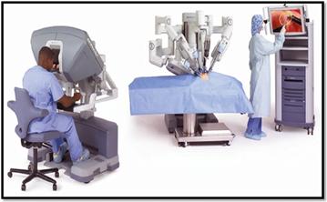

The amount of relevant data available for patient care is growing and will continue to grow in volume and variety. Clinicians are beginning to have access to data generated from wearable devices, social media, and public health records
and to the many types of data specific to an individual.
- Early detection, prediction, and diagnostics
- AI Helps to Reduce Manual Errors and
Improve Diagnostic Process
The most exciting artificial intelligence healthcare applications help doctors to improve diagnostic procedures. Today’s healthcare industry, specifically in developed markets like the USA, is highly using AI for accurately predicting
the patient’s disease faster than medical professionals do.
The healthcare segment is an open area that needs the support of more intelligent technologies. Using AI tools and devices, healthcare service providers are providing improved healthcare services. A noteworthy point is that the
implementation of AI technologies in healthcare is essential. It will greatly alter the way of diagnosing life-threatening diseases.
The healthcare segment is an open area that needs the support of more intelligent technologies. Using AI tools and devices, healthcare service providers are providing improved healthcare services. A noteworthy point is that the
implementation of AI technologies in healthcare is essential. It will greatly alter the way of diagnosing life-threatening diseases.
Few diseases are difficult to diagnose like oncology and cardiology diseases. However, AI-based diagnosis apps help doctors to provide treatment at the right time. In addition, Machine Learning (ML) and deep learning algorithms
are also used in healthcare. These technologies enable machines to learn from data and deliver insights into patient’s data. Hence, the doctors can check and analyse the severity level of the disease.
Likewise, AI-based wearable is developed to detect cardiac diseases in early phases. Thus, AI devices together with IoT & cloud avoid human errors and automate diagnosing process.
Example:
- PathAI (Austin, Texas and Boston, Massachusetts) delivers an AI-powered pathology solution using Machine Learning (ML) and deep learning algorithms to assist pathologists in fast diagnosing and providing treatment for today’s
challenging diseases.
- Buoy Health (Boston, Massachusetts) has developed an AI-powered health assistant. Buoy’s AI assistant can listen to your symptoms and guide you take the proper treatment based on its diagnosis.
- Enlitic, Inc (San Francisco, California) is striving to build a bridge between human and emerging AI technology to advance the process of medical diagnosis.
- AI for image analysis
Manual image analysis takes too long time and leaves minimum human errors. But, Artificial Intelligence machines using deep learning can view and scan thousands of medical images and detect patterns of various diseases. This feature
of AI allows healthcare providers to diagnose a disease exactly.
Radiology - AI solutions are being developed to automate image analysis and diagnosis. This can help highlight areas of interest on a scan to a radiologist, to drive efficiency and reduce human error enable instant interpretation
in under-served geographies or after hours.
Therefore, artificial intelligence is a pillar to get the next-level of tools for radiology. AI-based radiology tools need not to depend on tissue samples. Moreover, through Artificial intelligence-powered image analysis, healthcare
service providers can also perform can also aid their patients who are in remote locations. Telemedicine service is the best example for this scenario. This innovative healthcare service allows patients to send images of rashes,
cuts, etc. It helps doctors to determine the disease and provide necessary treatment.
- Preliminary Diagnosis
Correct diagnosis is the cornerstone of practising machine. The sooner the diagnosis, the better the treatment will be. AI applications use data architecture to improve the accuracy of the preliminary diagnosis.
- Surgical procedures
In the recent past, the healthcare industry is observing a skyrocket growth in performing robot-assisted surgical functions. Robot-assisted surgeries offer less pain and quick recovery time. Therefore, the use of robots optimizes the
process of surgery and reduced errors that are may happen with physicians.
Investments in AI-based robots are continuing to climb in the fast few years, especially in the healthcare sector. Intelligent robots can analyse data from previous medical logs. Based on medical reports of a patient, robots can guide
& control a surgeon’s instrument all through surgery. This process will reduce the time of the patient’s hospital stay. Robot-assisted surgery minimizes surgical incisions, and hence it is considered as minimally invasive surgery.
It brings to bear diverse sources of information, including patient risk factors, anatomic information, disease natural history, patient values and cost, to help physicians and patients make better predictions regarding the consequences
of surgical decisions. For instance, a deep learning model was used to predict which individuals with treatment resistant mesial temporal lobe epilepsy would most likely benefit from surgery.
The da Vinci Surgical System: It is a robotic surgical system developed by Intuitive Surgical Inc. (An American manufacturer of robotic products). It can enhance the patient’s outcome by performing minimally invasive surgery.
This intelligent system allows doctors to do difficult surgical process with more confidence and control. But, sure this benefit cannot be achieved using traditional surgical methods.

Further, robots automatically learn from medical records. Hence, the positive results delivered by intelligent robots are really helpful for physicians.
- Precision medicine
Even a little drop of medicine can make a huge difference. So it is important to keep the dosage of a patient absolutely perfect, or else there might be reparations to pay. The application is designed to reduce the margin of medical
errors that may occur when giving medicines to patients.
Data management is the most widely used application of artificial intelligence and digital automation. Robots collect, store, re-format, and trace data to provide faster, more consistent access.
AI applications can be used to monitor the use of medication by patients. There is a webcam arrangement which automatically relays information regarding how a patient is taking their prescription medicines. This also helps in better
management of the condition if it is serious.
- Patient safety and experience
(AI-based Virtual Nursing Assistants)
Patient engagement and adherence has long been seen as the ‘last mile’ problem of healthcare – the final barrier between ineffective and good health outcomes. The more patients proactively participate in their own well-being and care,
the better the outcomes – utilisation, financial outcomes and member experience. These factors are increasingly being addressed by big data and AI.
These assistants reduce hospital visits and also lessen the load on physicians. Virtual nursing assistants can efficiently interact with the patients and direct then to get better healthcare services from doctors. AI-based devices
can convert voice-to-text. This ability of AI helps doctors to recommend drugs/medications to the patients.
As virtual assistants provide 24/7 services, they can support and monitor patients conditions continuously. Quick response to patient’s queries is also the best feature of virtual assistants.
Artificial intelligence technology helps hospitals, doctors, as well as clinics to better serve their patients.
Example:
- Qventus, Inc(Mountain View, California) is the best AI-powered software help patients in overcoming operational challenges in the hospital. Starting from emergency departments and surgery units to patient safety,
Qventus software efficiently manages the flow of in-patients and outpatients. Thus, this Ai-powered healthcare solution boosts decisions in hospitals to improve service quality and experience.
- CloudMedXAI platform uses ML algorithms to continuously track and manage the patient journey across the healthcare system. It helps hospitals better manage their patient’s data including date of admission, medical
information, and also payment data. So, healthcare providers using these data can easily deal with patients when they discharged without any confusion.
- Treatment design
There are elaborate artificial intelligence systems which exist in the healthcare sector that are designed to store and analyze data. Whether it be notes and reports from a patient’s file, clinical expertise or external research, the
application will help you to narrow down the correct and customized treatment path for a patient.